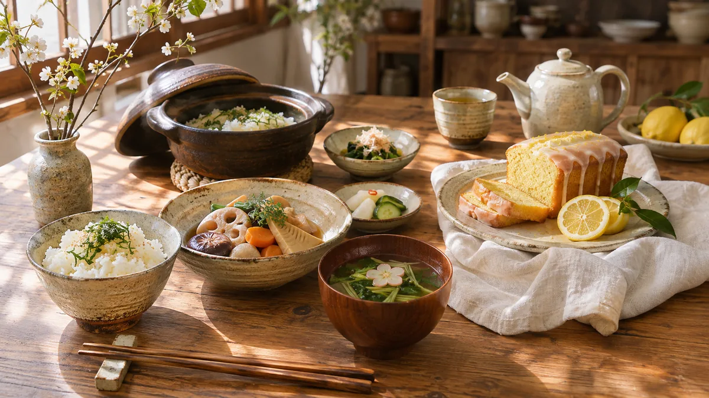
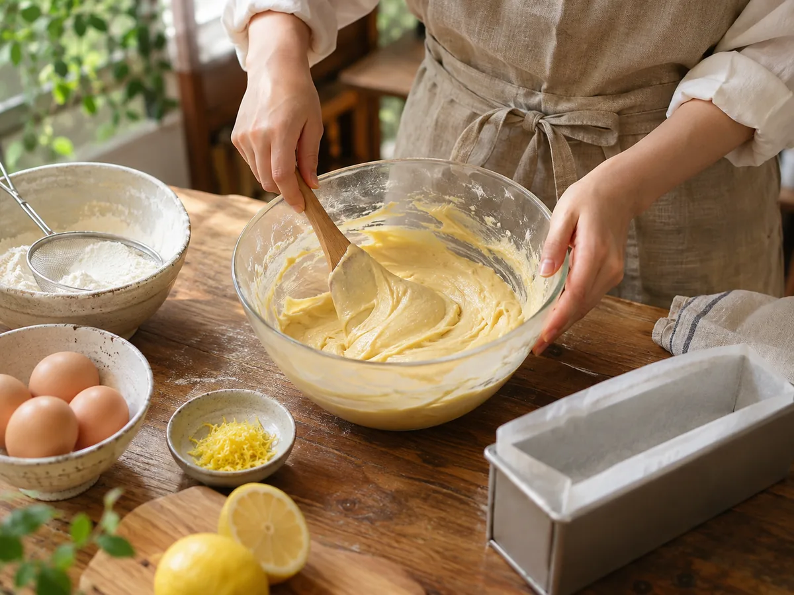

「帰ったその日の夜に、すぐ復習できました」
特別な調味料を使わないので、近所のスーパーで買い足して家族に作ったら「お店みたい！」と大好評。おひとり参加でしたが、4人だけなので自然と会話も弾みました。
30代・会社員（家庭料理クラス 初回参加）

Kitchen Note — Maximum 4 Guests
特別な道具を使わず、おうちで何度でも再現できる家庭料理と焼き菓子を最大4名の少人数でお伝えしています。入会金なし・単発参加OKです。
今月のレッスンと残席を見るMonthly Lesson Ledger
合わせ出汁・季節の炊き込みご飯・ほっとする副菜2品（レシピ・試食付）
¥6,500 残席 2名きめ細かいパウンド生地とグラスアローのコツ（1本丸ごとお持ち帰り）
¥7,200 残席 1名手でこねる楽しさを体感。焼き立てパンとスープのランチ付
¥6,800 残席 3名外はカリッと中はしっとり仕上げる温度管理を実践（8個お持ち帰り）
¥6,900 残席 2名First-Time Friendly
「包丁の持ち方から不安」「レシピ通りでもうまくいかない」という方も大歓迎。火加減や混ぜ終わりの見極めを、すぐ隣でじっくり確認できます。
エプロン・お手拭きは無料貸出。手ぶらでお越しください。
初回体験レッスンを予約する
Instructor
洋菓子店での製造とフードコーディネーターとしてのレシピ開発を経て、「スーパーで買える身近な食材で、家族に喜ばれる定番料理と焼き菓子を」という想いから2018年に教室を開きました。
「なぜこのタイミングで塩を入れるのか」「生地がどのくらい艶めいたら混ぜ終わりか」を五感でお伝えすることを大切にしています。
Lesson Schedule
Guest Notes
特別な調味料を使わないので、近所のスーパーで買い足して家族に作ったら「お店みたい！」と大好評。おひとり参加でしたが、4人だけなので自然と会話も弾みました。
30代・会社員（家庭料理クラス 初回参加）
動画レシピでは分からなかった焦がしバターの香りのピークと混ぜ方をすぐ隣で見せてもらえて納得。今では手土産に焼くのが一番の楽しみになっています。
40代・主婦（焼き菓子クラス リピート参加）
Questions
いいえ、入会金・年会費は一切いただいておりません。お好きなメニューの回だけ1回ずつご予約いただける完全単発制です。
リネンエプロン・ハンドタオル・筆記用具・お持ち帰り用の箱と紙袋はすべて教室でご用意しています。手ぶらでお気軽にお越しください。
もちろんです。最大4名の少人数ですので、包丁の扱い方や計量のコツから周囲を気にせずご質問いただけます。
食材準備のため、3日前までは無料キャンセル・日程振替が可能です。2日前以降はレシピ郵送または代理の方のご参加も承っております。
Access